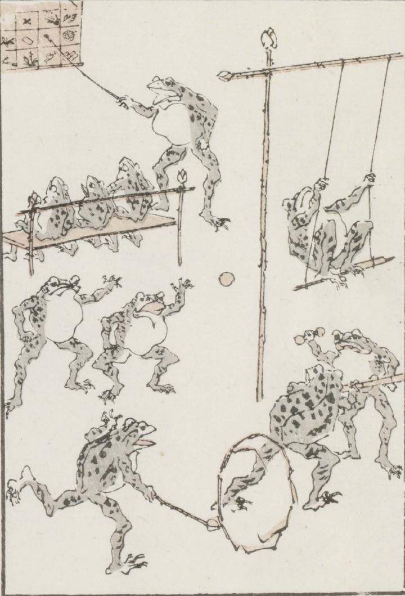

遊ぶ蛙たち。掛軸を講じる蛙と、椅子に座ってそれを見ている3匹の蛙。ブランコをする1匹の蛙。球と棒状のもので遊ぶ4匹の蛙。輪を回す1匹の蛙。
著作者：牧墨僊／出典：親書誌：U426_nichibunken_0097：滑稽洒落狂画苑；コッケイシャレキョウガエン／日付：2007／資源識別子：U426_nichibunken_0097_0043_0000
Copyright (c)2010- International Research Center for Japanese Studies, Kyoto, Japan. All rights reserved.